pacman::p_load(stargazer, # Reporte a latex
sjPlot, sjmisc, # reporte y gráficos
corrplot, # grafico correlaciones
xtable, # Reporte a latex
Hmisc, # varias funciones
psych, # fa y principal factors
psy, # scree plot function
nFactors, # parallel
GPArotation, devtools, ggrepel, EFAtools, psychTools) # rotaciónPráctica: EFA CONFIABILIDAD
Equipo Docente
- Profesor: Daniel Miranda (danmiranda@uchile.cl)
- Apoyo Docente: Felipe Varas
Ejemplo EFA: Rendimiento en asignaturas
Cargar paquetes
Datos
Lectura de datos
data = read.csv("./efa_asignaturas.csv")
#knitr::purl("/Users/daniel/Dropbox (Personal)/FACSO/Teaching/Doctorado/2026/Cuantitativa I/Clases/clase8_efa_alpha/Práctica EFA/practica_efa_conf.qmd")
#purl("test.Rmd", output = "test2.R", documentation = 2)- Muestra de 300 alumnos a los que se le pregunta por su asignatura favorita en una escala de 1 (no me agrada) a 5 (me agrada)
Exploración de datos
summary(data) BIO GEO CHEM ALG CALC
Min. :1.000 Min. :1.00 Min. :1.000 Min. :1.00 Min. :1.000
1st Qu.:1.000 1st Qu.:1.00 1st Qu.:1.000 1st Qu.:2.00 1st Qu.:2.000
Median :2.000 Median :2.00 Median :2.000 Median :3.00 Median :3.000
Mean :2.353 Mean :2.17 Mean :2.237 Mean :3.05 Mean :3.063
3rd Qu.:3.000 3rd Qu.:3.00 3rd Qu.:3.000 3rd Qu.:4.00 3rd Qu.:4.000
Max. :5.000 Max. :5.00 Max. :5.000 Max. :5.00 Max. :5.000
STAT
Min. :1.000
1st Qu.:2.000
Median :3.000
Mean :2.937
3rd Qu.:4.000
Max. :5.000 head(data) # muestra 6 primeros casos, BIO GEO CHEM ALG CALC STAT
1 1 1 1 1 1 1
2 4 4 3 4 4 4
3 2 1 3 4 1 1
4 2 3 2 4 4 3
5 3 1 2 2 3 4
6 1 1 1 4 4 4 # útil para revisar lectura de datos
dim(data) # filas columnas[1] 300 6nrow(na.omit(data)) # número de casos con datos completos[1] 300View(data)
str(data)'data.frame': 300 obs. of 6 variables:
$ BIO : int 1 4 2 2 3 1 3 4 2 2 ...
$ GEO : int 1 4 1 3 1 1 3 3 1 3 ...
$ CHEM: int 1 3 3 2 2 1 3 4 3 3 ...
$ ALG : int 1 4 4 4 2 4 2 2 3 2 ...
$ CALC: int 1 4 1 4 3 4 3 3 4 3 ...
$ STAT: int 1 4 1 3 4 4 1 2 3 4 ...names(data)[1] "BIO" "GEO" "CHEM" "ALG" "CALC" "STAT"Descripción datos
stargazer(data, type = "text") # para visualizar en consola
====================================
Statistic N Mean St. Dev. Min Max
------------------------------------
BIO 300 2.353 1.228 1 5
GEO 300 2.170 1.230 1 5
CHEM 300 2.237 1.273 1 5
ALG 300 3.050 1.174 1 5
CALC 300 3.063 1.127 1 5
STAT 300 2.937 1.259 1 5
------------------------------------stargazer(data, type = "html") # a html#sjplot(data$BIO, "frq") # no muy buena descripción ...
plot_frq(data) [[1]]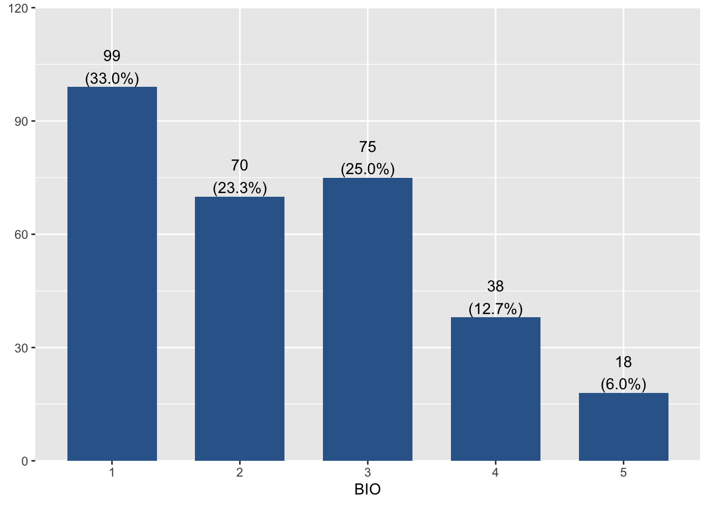
[[2]]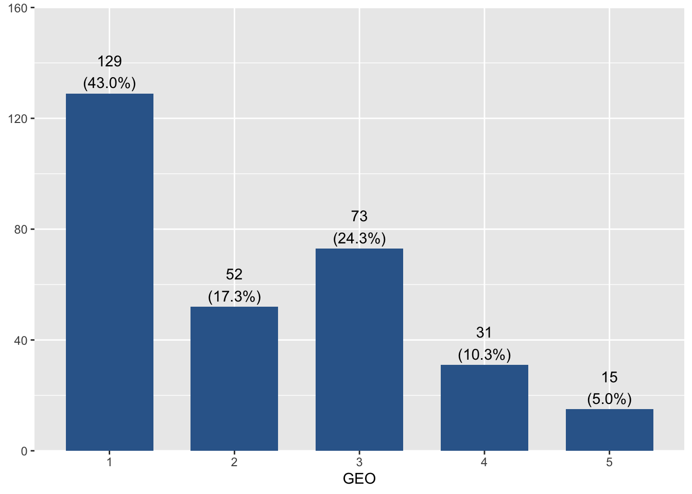
[[3]]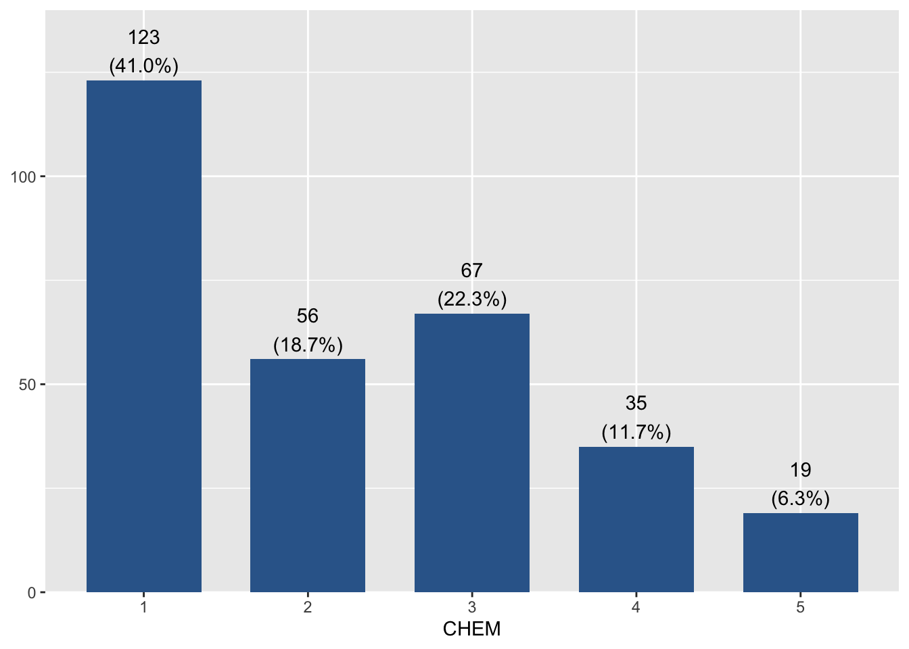
[[4]]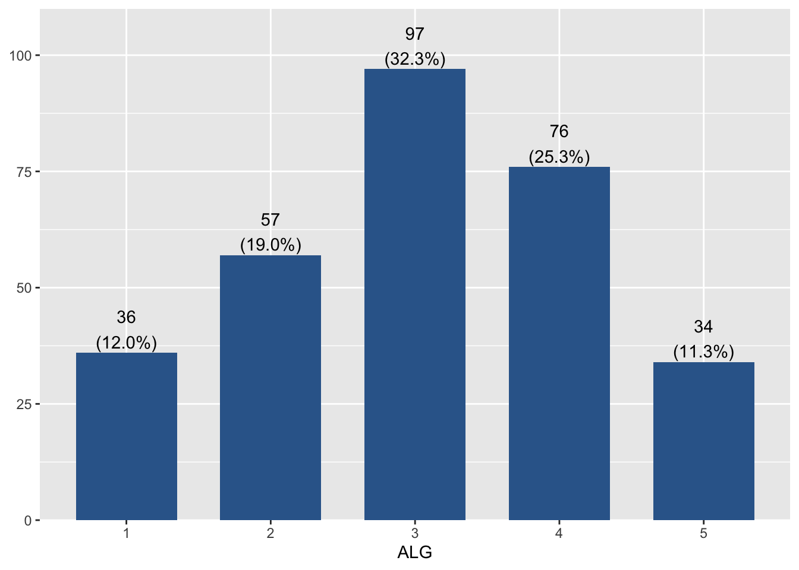
[[5]]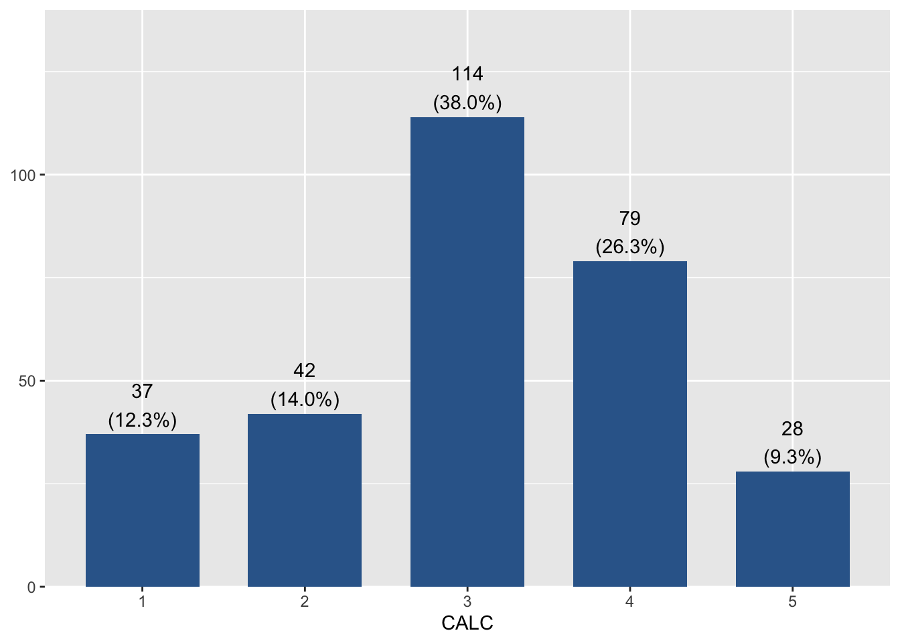
[[6]]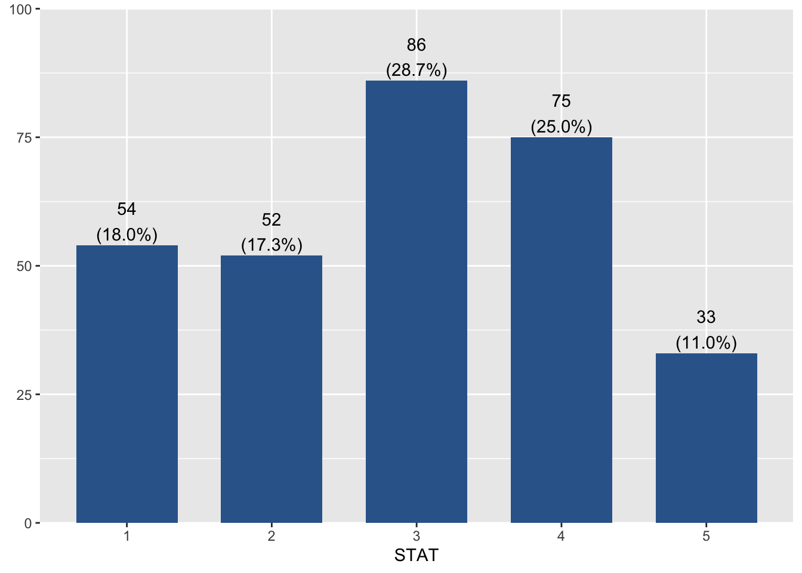
Un par de mejoras: leyenda, colores, sentido categorías
data2=6-data # recode items para que más acuerdo vaya a la derecha
labels <- c("Muy de acuerdo", "De acuerdo","Neutro", "Desacuerdo", "Muy en desacuerdo")
items <- c("Biología", "Geografía", "Química", "Algebra", "Cálculo", "Estadística")Gráfico final
plot_likert(data2,
legend.labels = labels,
axis.labels = items,
cat.neutral = 3, # identifica a indiferentes
geom.colors = "PuBu", # colorbrewer2.org para temas
sort.frq = "neg.asc" # sort descending
) 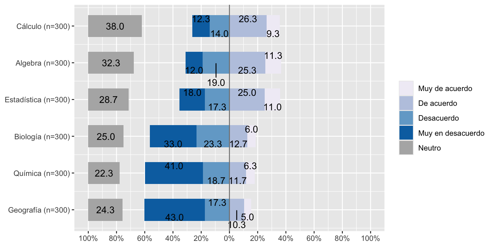
#sjPlot::tab_stackfrq(data2)Analisis de matriz de correlaciones
Matriz
corMat <- round(cor(data), 2) # estimar matriz pearson
corMat # muestra matriz BIO GEO CHEM ALG CALC STAT
BIO 1.00 0.68 0.75 0.12 0.21 0.20
GEO 0.68 1.00 0.68 0.14 0.20 0.23
CHEM 0.75 0.68 1.00 0.08 0.14 0.17
ALG 0.12 0.14 0.08 1.00 0.77 0.41
CALC 0.21 0.20 0.14 0.77 1.00 0.51
STAT 0.20 0.23 0.17 0.41 0.51 1.00Reporte tabla
#tab_corr(data, triangle = "lower") # Tabla en html
stargazer(corMat, title="Correlaciones") #Latex tableReporte gráfico con corrplot
M=cor(data) # matriz simple de correlaciones de los datos
corrplot(M, type="lower") # lower x bajo diagonal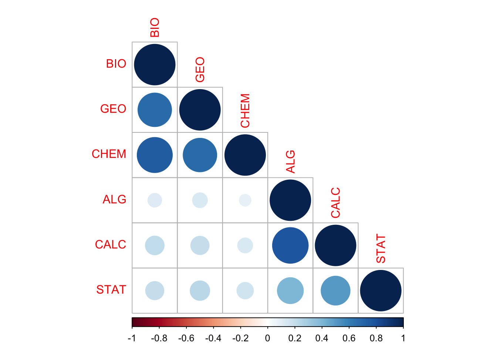
Otra opción
corrplot(M, type="lower",
order="AOE", cl.pos="b", tl.pos="d") #agrega nombres en diag.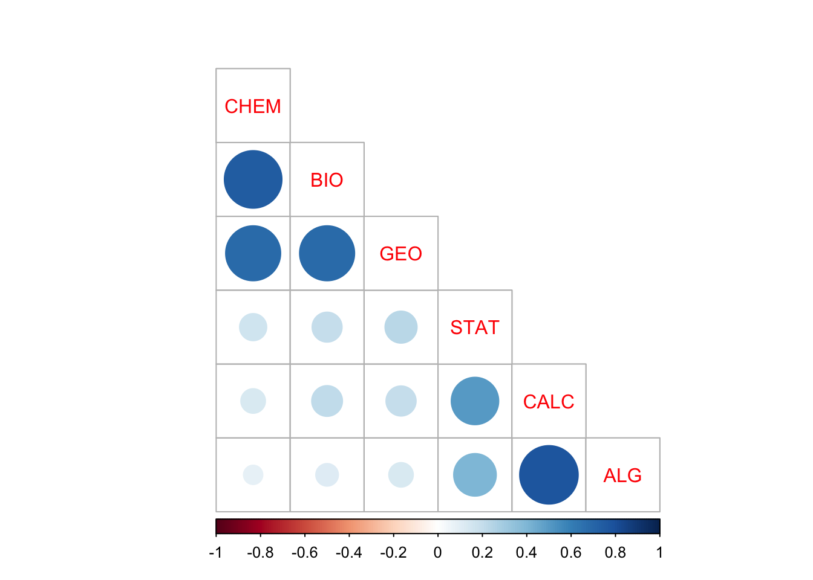
¿Qué se puede deducir de esta matriz de correlaciones en relación a la estructura subyacente en términos de variables latentes?
Adecuación de matriz para análisis factorial
KMO(corMat)
── Kaiser-Meyer-Olkin criterion (KMO) ──────────────────────────────────────────
✔ The overall KMO value for your data is middling.
These data are probably suitable for factor analysis.
Overall: 0.705
For each variable:
BIO GEO CHEM ALG CALC STAT
0.730 0.809 0.724 0.608 0.606 0.837 cortest.bartlett(corMat, n = 300)$chisq
[1] 848.1369
$p.value
[1] 4.388351e-171
$df
[1] 15Extracción
Ejes principales
fac_pa <- fa(r = data, nfactors = 2, fm= "pa")
#summary(fac_pa)
fac_paFactor Analysis using method = pa
Call: fa(r = data, nfactors = 2, fm = "pa")
Standardized loadings (pattern matrix) based upon correlation matrix
PA1 PA2 h2 u2 com
BIO 0.86 0.02 0.75 0.255 1.0
GEO 0.78 0.05 0.63 0.369 1.0
CHEM 0.87 -0.05 0.75 0.253 1.0
ALG -0.04 0.81 0.65 0.354 1.0
CALC 0.01 0.96 0.92 0.081 1.0
STAT 0.13 0.50 0.29 0.709 1.1
PA1 PA2
SS loadings 2.14 1.84
Proportion Var 0.36 0.31
Cumulative Var 0.36 0.66
Proportion Explained 0.54 0.46
Cumulative Proportion 0.54 1.00
With factor correlations of
PA1 PA2
PA1 1.00 0.21
PA2 0.21 1.00
Mean item complexity = 1
Test of the hypothesis that 2 factors are sufficient.
df null model = 15 with the objective function = 2.87 with Chi Square = 849.21
df of the model are 4 and the objective function was 0.01
The root mean square of the residuals (RMSR) is 0.01
The df corrected root mean square of the residuals is 0.02
The harmonic n.obs is 300 with the empirical chi square 0.78 with prob < 0.94
The total n.obs was 300 with Likelihood Chi Square = 3.32 with prob < 0.51
Tucker Lewis Index of factoring reliability = 1.003
RMSEA index = 0 and the 90 % confidence intervals are 0 0.08
BIC = -19.5
Fit based upon off diagonal values = 1
Measures of factor score adequacy
PA1 PA2
Correlation of (regression) scores with factors 0.94 0.96
Multiple R square of scores with factors 0.88 0.93
Minimum correlation of possible factor scores 0.77 0.86sjPlot::tab_fa(fac_pa)Cronbach's Alpha can only be calculated when having a data frame with each component / variable as column.| Factor 1 | Factor 2 | |
| BIO | 0.86 | 0.02 |
| GEO | 0.78 | 0.05 |
| CHEM | 0.87 | -0.05 |
| ALG | -0.04 | 0.81 |
| CALC | 0.01 | 0.96 |
| STAT | 0.13 | 0.50 |
Maximum likelihood
fac_ml <- fa(r = data, nfactors = 2, fm= "ml")
fac_mlFactor Analysis using method = ml
Call: fa(r = data, nfactors = 2, fm = "ml")
Standardized loadings (pattern matrix) based upon correlation matrix
ML2 ML1 h2 u2 com
BIO 0.86 0.03 0.75 0.252 1.0
GEO 0.78 0.04 0.63 0.375 1.0
CHEM 0.88 -0.05 0.75 0.249 1.0
ALG -0.04 0.80 0.63 0.374 1.0
CALC 0.01 0.97 0.95 0.048 1.0
STAT 0.13 0.49 0.29 0.715 1.1
ML2 ML1
SS loadings 2.14 1.84
Proportion Var 0.36 0.31
Cumulative Var 0.36 0.66
Proportion Explained 0.54 0.46
Cumulative Proportion 0.54 1.00
With factor correlations of
ML2 ML1
ML2 1.00 0.21
ML1 0.21 1.00
Mean item complexity = 1
Test of the hypothesis that 2 factors are sufficient.
df null model = 15 with the objective function = 2.87 with Chi Square = 849.21
df of the model are 4 and the objective function was 0.01
The root mean square of the residuals (RMSR) is 0.01
The df corrected root mean square of the residuals is 0.02
The harmonic n.obs is 300 with the empirical chi square 0.97 with prob < 0.91
The total n.obs was 300 with Likelihood Chi Square = 2.94 with prob < 0.57
Tucker Lewis Index of factoring reliability = 1.005
RMSEA index = 0 and the 90 % confidence intervals are 0 0.076
BIC = -19.87
Fit based upon off diagonal values = 1
Measures of factor score adequacy
ML2 ML1
Correlation of (regression) scores with factors 0.94 0.98
Multiple R square of scores with factors 0.89 0.96
Minimum correlation of possible factor scores 0.77 0.91sjPlot::tab_fa(fac_ml)Cronbach's Alpha can only be calculated when having a data frame with each component / variable as column.| Factor 1 | Factor 2 | |
| BIO | 0.86 | 0.03 |
| GEO | 0.78 | 0.04 |
| CHEM | 0.88 | -0.05 |
| ALG | -0.04 | 0.80 |
| CALC | 0.01 | 0.97 |
| STAT | 0.13 | 0.49 |
Plot de cargas factoriales ml
factor.plot(fac_ml, labels=rownames(fac_ml$loadings))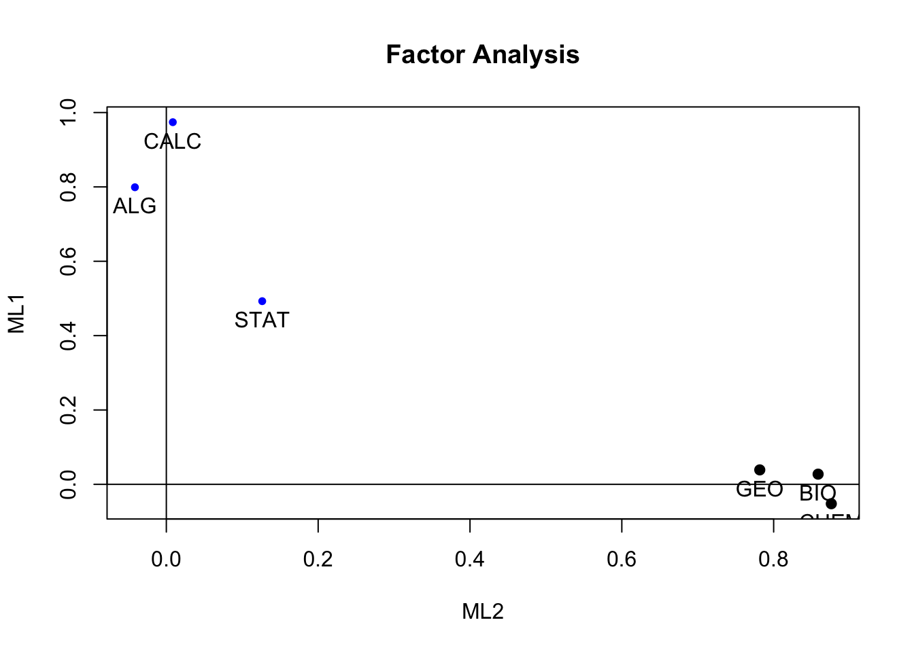
Puntajes factoriales
fac_ml <- fa(r = data, nfactors = 2, fm= "ml", scores="regression")
data2=data
data3 <- cbind(data2, fac_ml$scores)
head(data3) BIO GEO CHEM ALG CALC STAT ML2 ML1
1 1 1 1 1 1 1 -1.11000161 -1.8370399
2 4 4 3 4 4 4 1.15276348 0.8487698
3 2 1 3 4 1 1 -0.18837658 -1.6079204
4 2 3 2 4 4 3 -0.01259869 0.8178463
5 3 1 2 2 3 4 -0.07039123 -0.1079274
6 1 1 1 4 4 4 -1.02171630 0.8350545Seleccion de numero de factores
Gráficos
scree.plot(data) 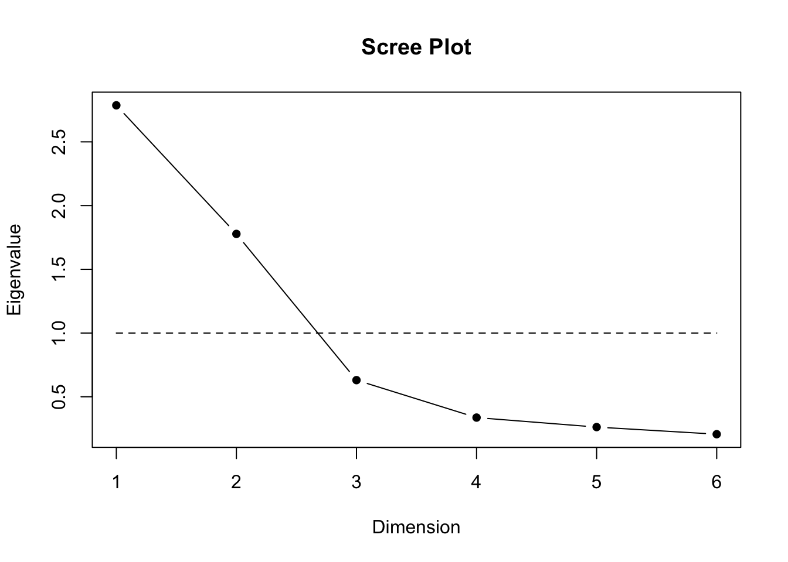
fa.parallel(corMat, n.obs=300) 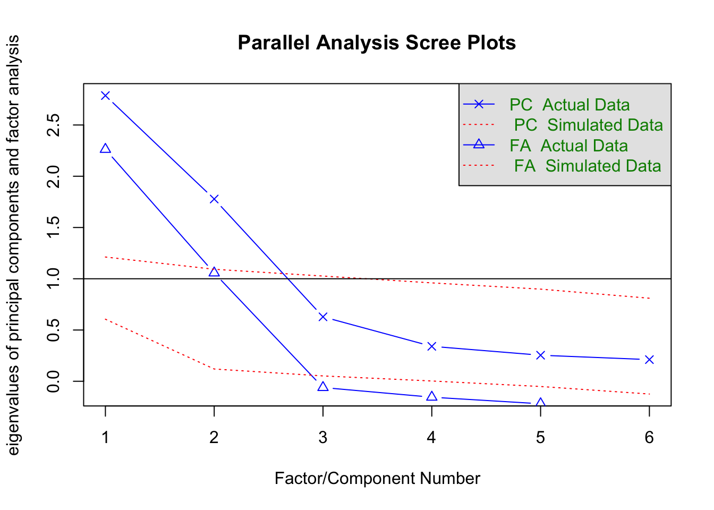
Parallel analysis suggests that the number of factors = 2 and the number of components = 2 Rotación
Varimax (ortogonal)
fac_ml_var <- fa(r = data, nfactors = 2, fm= "ml", rotate="varimax") # ortogonal
fac_ml_varFactor Analysis using method = ml
Call: fa(r = data, nfactors = 2, rotate = "varimax", fm = "ml")
Standardized loadings (pattern matrix) based upon correlation matrix
ML2 ML1 h2 u2 com
BIO 0.85 0.13 0.75 0.252 1.0
GEO 0.78 0.13 0.63 0.375 1.1
CHEM 0.86 0.06 0.75 0.249 1.0
ALG 0.03 0.79 0.63 0.374 1.0
CALC 0.10 0.97 0.95 0.048 1.0
STAT 0.17 0.51 0.29 0.715 1.2
ML2 ML1
SS loadings 2.12 1.86
Proportion Var 0.35 0.31
Cumulative Var 0.35 0.66
Proportion Explained 0.53 0.47
Cumulative Proportion 0.53 1.00
Mean item complexity = 1.1
Test of the hypothesis that 2 factors are sufficient.
df null model = 15 with the objective function = 2.87 with Chi Square = 849.21
df of the model are 4 and the objective function was 0.01
The root mean square of the residuals (RMSR) is 0.01
The df corrected root mean square of the residuals is 0.02
The harmonic n.obs is 300 with the empirical chi square 0.97 with prob < 0.91
The total n.obs was 300 with Likelihood Chi Square = 2.94 with prob < 0.57
Tucker Lewis Index of factoring reliability = 1.005
RMSEA index = 0 and the 90 % confidence intervals are 0 0.076
BIC = -19.87
Fit based upon off diagonal values = 1
Measures of factor score adequacy
ML2 ML1
Correlation of (regression) scores with factors 0.94 0.98
Multiple R square of scores with factors 0.88 0.95
Minimum correlation of possible factor scores 0.76 0.91Promax (oblicua)
fac_ml_pro <- fa(r = data, nfactors = 2, fm= "ml", rotate="promax")
fac_ml_proFactor Analysis using method = ml
Call: fa(r = data, nfactors = 2, rotate = "promax", fm = "ml")
Standardized loadings (pattern matrix) based upon correlation matrix
ML2 ML1 h2 u2 com
BIO 0.86 0.02 0.75 0.252 1.0
GEO 0.78 0.03 0.63 0.375 1.0
CHEM 0.88 -0.06 0.75 0.249 1.0
ALG -0.09 0.81 0.63 0.374 1.0
CALC -0.05 0.99 0.95 0.048 1.0
STAT 0.10 0.50 0.29 0.715 1.1
ML2 ML1
SS loadings 2.12 1.86
Proportion Var 0.35 0.31
Cumulative Var 0.35 0.66
Proportion Explained 0.53 0.47
Cumulative Proportion 0.53 1.00
With factor correlations of
ML2 ML1
ML2 1.00 0.28
ML1 0.28 1.00
Mean item complexity = 1
Test of the hypothesis that 2 factors are sufficient.
df null model = 15 with the objective function = 2.87 with Chi Square = 849.21
df of the model are 4 and the objective function was 0.01
The root mean square of the residuals (RMSR) is 0.01
The df corrected root mean square of the residuals is 0.02
The harmonic n.obs is 300 with the empirical chi square 0.97 with prob < 0.91
The total n.obs was 300 with Likelihood Chi Square = 2.94 with prob < 0.57
Tucker Lewis Index of factoring reliability = 1.005
RMSEA index = 0 and the 90 % confidence intervals are 0 0.076
BIC = -19.87
Fit based upon off diagonal values = 1
Measures of factor score adequacy
ML2 ML1
Correlation of (regression) scores with factors 0.94 0.98
Multiple R square of scores with factors 0.89 0.96
Minimum correlation of possible factor scores 0.77 0.91Reporte: Tabla análisis factorial
A html via sjPlot
# tab_fa(data, method="ml", rotation = "varimax", show.comm = TRUE, title = "Análisis factorial asignaturas")Tabla de latex
str(fac_ml_pro$loadings)
class(fac_ml_pro$loadings)xtable(unclass(fac_ml_pro$loadings))# fa2latex(fac_ml_pro) # Función desactualizadaEjemplo Confiabilidad: Rendimiento en asignaturas
Análisis de Confiabilidad: psych::alpha
psych::alpha(data)
Reliability analysis
Call: psych::alpha(x = data)
raw_alpha std.alpha G6(smc) average_r S/N ase mean sd median_r
0.77 0.77 0.84 0.35 3.3 0.022 2.6 0.82 0.21
95% confidence boundaries
lower alpha upper
Feldt 0.72 0.77 0.80
Duhachek 0.72 0.77 0.81
Reliability if an item is dropped:
raw_alpha std.alpha G6(smc) average_r S/N alpha se var.r med.r
BIO 0.71 0.71 0.78 0.33 2.5 0.028 0.060 0.22
GEO 0.71 0.72 0.80 0.34 2.5 0.028 0.067 0.21
CHEM 0.72 0.73 0.79 0.35 2.7 0.027 0.055 0.22
ALG 0.75 0.75 0.79 0.38 3.0 0.023 0.061 0.22
CALC 0.73 0.73 0.76 0.35 2.6 0.025 0.069 0.22
STAT 0.75 0.75 0.84 0.38 3.0 0.024 0.089 0.21
Item statistics
n raw.r std.r r.cor r.drop mean sd
BIO 300 0.74 0.73 0.69 0.59 2.4 1.2
GEO 300 0.73 0.72 0.66 0.58 2.2 1.2
CHEM 300 0.71 0.69 0.65 0.53 2.2 1.3
ALG 300 0.60 0.62 0.57 0.41 3.0 1.2
CALC 300 0.68 0.70 0.67 0.52 3.1 1.1
STAT 300 0.62 0.62 0.48 0.42 2.9 1.3
Non missing response frequency for each item
1 2 3 4 5 miss
BIO 0.33 0.23 0.25 0.13 0.06 0
GEO 0.43 0.17 0.24 0.10 0.05 0
CHEM 0.41 0.19 0.22 0.12 0.06 0
ALG 0.12 0.19 0.32 0.25 0.11 0
CALC 0.12 0.14 0.38 0.26 0.09 0
STAT 0.18 0.17 0.29 0.25 0.11 0Análisis de Confiabilidad: sjPlot
sjPlot::tab_itemscale(data)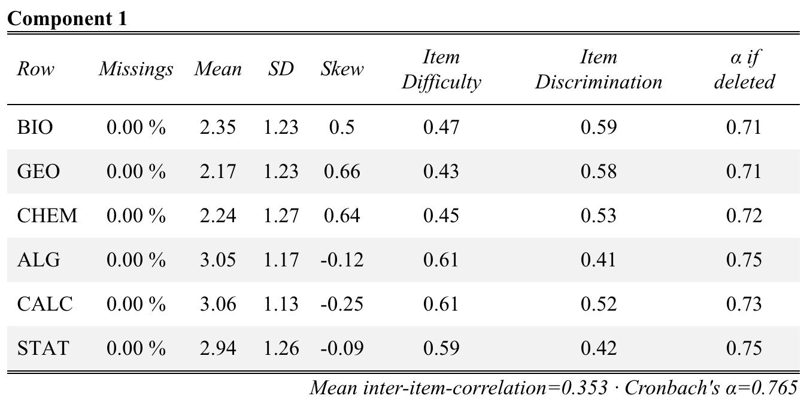
sci= data%>%
dplyr::select(BIO, CHEM, GEO)
sjPlot::tab_itemscale(sci)| Row | Missings | Mean | SD | Skew | Item Difficulty | Item Discrimination | α if deleted | |
| BIO | 0.00 % | 2.35 | 1.23 | 0.5 | 0.47 | 0.78 | 0.81 | |
| CHEM | 0.00 % | 2.24 | 1.27 | 0.64 | 0.45 | 0.78 | 0.81 | |
| GEO | 0.00 % | 2.17 | 1.23 | 0.66 | 0.43 | 0.73 | 0.85 | |
| Mean inter-item-correlation=0.704 · Cronbach's α=0.877 | ||||||||
mat= data%>%
dplyr::select(ALG, CALC, STAT)
sjPlot::tab_itemscale(mat)| Row | Missings | Mean | SD | Skew | Item Difficulty | Item Discrimination | α if deleted | |
| ALG | 0.00 % | 3.05 | 1.17 | -0.12 | 0.61 | 0.67 | 0.67 | |
| CALC | 0.00 % | 3.06 | 1.13 | -0.25 | 0.61 | 0.76 | 0.58 | |
| STAT | 0.00 % | 2.94 | 1.26 | -0.09 | 0.59 | 0.49 | 0.87 | |
| Mean inter-item-correlation=0.563 · Cronbach's α=0.788 | ||||||||
Análisis de Confiabilidad: OMEGA
psych::omega(sci, plot=FALSE)Warning in cov2cor(t(w) %*% r %*% w): diag(V) had non-positive or NA entries;
the non-finite result may be dubiousOmega
Call: omegah(m = m, nfactors = nfactors, fm = fm, key = key, flip = flip,
digits = digits, title = title, sl = sl, labels = labels,
plot = plot, n.obs = n.obs, rotate = rotate, Phi = Phi, option = option,
covar = covar)
Alpha: 0.88
G.6: 0.83
Omega Hierarchical: 0.05
Omega H asymptotic: 0.06
Omega Total 0.88
Schmid Leiman Factor loadings greater than 0.2
g F1* F2* F3* h2 h2 u2 p2 com
BIO 0.2 0.84 0.75 0.75 0.25 0.05 1.11
CHEM 0.2 0.84 0.75 0.75 0.25 0.05 1.11
GEO 0.2 0.77 0.63 0.63 0.37 0.06 1.15
With Sums of squares of:
g F1* F2* F3* h2
0.12 2.00 0.01 0.00 1.51
general/max 0.06 max/min = Inf
mean percent general = 0.05 with sd = 0.01 and cv of 0.11
Explained Common Variance of the general factor = 0.06
The degrees of freedom are -3 and the fit is 0
The number of observations was 300 with Chi Square = 0 with prob < NA
The root mean square of the residuals is 0
The df corrected root mean square of the residuals is NA
Compare this with the adequacy of just a general factor and no group factors
The degrees of freedom for just the general factor are 0 and the fit is 1.42
The number of observations was 300 with Chi Square = 421.49 with prob < NA
The root mean square of the residuals is 0.67
The df corrected root mean square of the residuals is NA
Measures of factor score adequacy
g F1* F2* F3*
Correlation of scores with factors 0.22 0.91 0.13 0
Multiple R square of scores with factors 0.05 0.84 0.02 0
Minimum correlation of factor score estimates -0.90 0.67 -0.97 -1
Total, General and Subset omega for each subset
g F1* F2* F3*
Omega total for total scores and subscales 0.88 0.88 NA NA
Omega general for total scores and subscales 0.05 0.05 NA NA
Omega group for total scores and subscales 0.83 0.83 NA NApsych::omega(mat, plot=FALSE)Warning in cov2cor(t(w) %*% r %*% w): diag(V) had non-positive or NA entries;
the non-finite result may be dubiousOmega
Call: omegah(m = m, nfactors = nfactors, fm = fm, key = key, flip = flip,
digits = digits, title = title, sl = sl, labels = labels,
plot = plot, n.obs = n.obs, rotate = rotate, Phi = Phi, option = option,
covar = covar)
Alpha: 0.79
G.6: 0.76
Omega Hierarchical: 0.02
Omega H asymptotic: 0.02
Omega Total 0.83
Schmid Leiman Factor loadings greater than 0.2
g F1* F2* F3* h2 h2 u2 p2 com
ALG 0.82 0.7 0.7 0.3 0.01 1.08
CALC 0.94 0.9 0.9 0.1 0.02 1.06
STAT 0.52 0.3 0.3 0.7 0.03 1.28
With Sums of squares of:
g F1* F2* F3* h2
0.04 1.81 0.05 0.00 1.39
general/max 0.02 max/min = Inf
mean percent general = 0.02 with sd = 0.01 and cv of 0.5
Explained Common Variance of the general factor = 0.02
The degrees of freedom are -3 and the fit is 0
The number of observations was 300 with Chi Square = 0 with prob < NA
The root mean square of the residuals is 0
The df corrected root mean square of the residuals is NA
Compare this with the adequacy of just a general factor and no group factors
The degrees of freedom for just the general factor are 0 and the fit is 1.16
The number of observations was 300 with Chi Square = 343.87 with prob < NA
The root mean square of the residuals is 0.57
The df corrected root mean square of the residuals is NA
Measures of factor score adequacy
g F1* F2* F3*
Correlation of scores with factors 0.15 0.95 0.34 0
Multiple R square of scores with factors 0.02 0.90 0.12 0
Minimum correlation of factor score estimates -0.96 0.80 -0.76 -1
Total, General and Subset omega for each subset
g F1* F2* F3*
Omega total for total scores and subscales 0.83 0.83 NA NA
Omega general for total scores and subscales 0.02 0.02 NA NA
Omega group for total scores and subscales 0.81 0.81 NA NAIntroducción
Este documento resume las actividades para el análisis de regresión. Comienza con el análisis de confiabilidad de un indicador que luego se utiliza en un modelo de regresión.
Instalar o instalar librerías útiles para la sesión
#install.packages(c("splitstackshape","psych"))
library(readr)
library(splitstackshape)
library(psych)
library(summarytools)
library(skimr)
library(ggplot2)
library(dplyr)
library(kableExtra)
library(table1)
library(modest)
library(BSDA)
library(crosstable)
library(gmodels)
library(corrplot)
library(sjPlot)
library(stargazer)
library(rio)
library(performance)
library(see)
library(interactions)Lectura de datos
Para nuestro análisis de datos se generó una base que evalúa multiples actitudes. Las c05_01 a la c05_08 se orientan a evaluar el grado de confianza en instituciones (por ejemplo: confianza en el Gobierno, Los Partidos Políticos, El Parlamento, etc.).
base= rio::import("https://www.dropbox.com/scl/fi/wo7rvoz0lw9wkx65boen8/ELSOC_W01_subset.csv?rlkey=kox9y3ie7n61dj26hidg91o56&dl=1")
names(base) [1] "idencuesta" "c01" "c02" "c03" "c04"
[6] "c05_01" "c05_02" "c05_03" "c05_04" "c05_05"
[11] "c05_06" "c05_07" "c05_08" "c06_01" "c06_02"
[16] "c06_03" "c06_04" "c06_05" "c06_06" "c11"
[21] "c13" "c14_01" "c14_02" "d05_02" "d05_04"
[26] "m0_sexo" "m0_edad" "m01" "m35" Vista previa de la de datos
Los siguientes códigos permiten explorar los datos de manera general.
# Vista previa de los datos
View(base)
# Mostrar los nombres de las variables contenidas en la base datos
names(base) [1] "idencuesta" "c01" "c02" "c03" "c04"
[6] "c05_01" "c05_02" "c05_03" "c05_04" "c05_05"
[11] "c05_06" "c05_07" "c05_08" "c06_01" "c06_02"
[16] "c06_03" "c06_04" "c06_05" "c06_06" "c11"
[21] "c13" "c14_01" "c14_02" "d05_02" "d05_04"
[26] "m0_sexo" "m0_edad" "m01" "m35" # Muestra el número de filas y columnas (casos y variables)
dim(base)[1] 2927 29# Muestra los primeros 10 casos de la base para todas las variables
head(base, 10) idencuesta c01 c02 c03 c04 c05_01 c05_02 c05_03 c05_04 c05_05 c05_06 c05_07
1 1101011 1 1 3 3 1 1 1 3 1 1 1
2 1101012 1 3 2 2 1 1 2 2 2 1 1
3 1101013 1 3 3 2 1 1 1 1 1 3 1
4 1101021 1 1 2 2 1 1 3 4 1 4 1
5 1101022 2 2 2 3 1 1 3 1 1 1 1
6 1101023 1 2 2 2 1 1 2 1 1 2 1
7 1101032 3 1 1 2 1 1 2 1 1 1 1
8 1101033 3 2 3 2 1 1 3 3 2 2 1
9 1101041 1 1 2 3 1 1 2 3 1 1 1
10 1101042 4 1 1 2 1 1 2 1 2 2 1
c05_08 c06_01 c06_02 c06_03 c06_04 c06_05 c06_06 c11 c13 c14_01 c14_02
1 1 1 1 1 4 2 1 1 1 2 2
2 1 1 1 1 3 2 4 2 1 1 1
3 1 1 1 1 5 4 2 1 1 1 1
4 1 1 2 1 4 5 5 2 2 2 2
5 1 1 1 1 3 1 1 1 1 1 1
6 1 1 1 1 4 5 1 2 1 2 2
7 1 1 1 1 1 1 1 2 1 1 5
8 1 1 1 1 5 2 2 1 1 3 3
9 1 1 1 1 3 3 2 1 1 1 2
10 1 1 1 1 5 3 2 2 1 3 2
d05_02 d05_04 m0_sexo m0_edad m01 m35
1 4 3 2 64 2 2
2 5 5 2 60 4 3
3 2 5 2 26 4 3
4 2 4 1 51 8 3
5 5 3 1 69 5 3
6 5 5 1 62 4 1
7 5 4 2 54 5 4
8 2 4 2 32 6 2
9 3 4 1 38 5 1
10 4 5 1 46 5 3# Muestra los primeros 10 casos de la base para una variable específica
head(base$c01, 10) [1] 1 1 1 1 2 1 3 3 1 4Otra forma de describir los datos rápidamente es usando la librería summarytools. Esta genera información para cada variable.
print(summarytools::dfSummary(base, method = "render")) ## Descripción de la base de datosData Frame Summary
base
Dimensions: 2927 x 29
Duplicates: 0
| No | Variable | Stats / Values | Freqs (% of Valid) | Graph | Valid | Missing |
|---|---|---|---|---|---|---|
| 1 | idencuesta [integer] | Mean (sd) : 8993199 (6624147) min < med < max: 1101011 < 8110053 < 131230214 IQR (CV) : 7410944 (0.7) | 2927 distinct values | : : : : : | 2927 (100.0%) | 0 (0.0%) |
| 2 | c01 [integer] | Mean (sd) : 2 (1.1) min < med < max: 1 < 2 < 5 IQR (CV) : 2 (0.5) | 1 : 1228 (43.9%) 2 : 704 (25.2%) 3 : 591 (21.1%) 4 : 202 ( 7.2%) 5 : 73 ( 2.6%) | IIIIIIII IIIII IIII I | 2798 (95.6%) | 129 (4.4%) |
| 3 | c02 [integer] | Mean (sd) : 2 (0.4) min < med < max: 1 < 2 < 3 IQR (CV) : 0 (0.2) | 1 : 276 ( 9.6%) 2 : 2373 (82.4%) 3 : 232 ( 8.1%) | I IIIIIIIIIIIIIIII I | 2881 (98.4%) | 46 (1.6%) |
| 4 | c03 [integer] | Mean (sd) : 2 (0.5) min < med < max: 1 < 2 < 3 IQR (CV) : 0 (0.3) | 1 : 414 (14.3%) 2 : 2196 (75.9%) 3 : 284 ( 9.8%) | II IIIIIIIIIIIIIII I | 2894 (98.9%) | 33 (1.1%) |
| 5 | c04 [integer] | Mean (sd) : 1.5 (0.7) min < med < max: 1 < 1 < 3 IQR (CV) : 1 (0.5) | 1 : 1797 (62.6%) 2 : 723 (25.2%) 3 : 349 (12.2%) | IIIIIIIIIIII IIIII II | 2869 (98.0%) | 58 (2.0%) |
| 6 | c05_01 [integer] | Mean (sd) : 1.9 (1) min < med < max: 1 < 2 < 5 IQR (CV) : 2 (0.5) | 1 : 1363 (46.8%) 2 : 808 (27.7%) 3 : 554 (19.0%) 4 : 153 ( 5.2%) 5 : 37 ( 1.3%) | IIIIIIIII IIIII III I | 2915 (99.6%) | 12 (0.4%) |
| 7 | c05_02 [integer] | Mean (sd) : 1.4 (0.7) min < med < max: 1 < 1 < 5 IQR (CV) : 1 (0.5) | 1 : 2080 (71.6%) 2 : 557 (19.2%) 3 : 244 ( 8.4%) 4 : 20 ( 0.7%) 5 : 5 ( 0.2%) | IIIIIIIIIIIIII III I | 2906 (99.3%) | 21 (0.7%) |
| 8 | c05_03 [integer] | Mean (sd) : 3.1 (1.2) min < med < max: 1 < 3 < 5 IQR (CV) : 2 (0.4) | 1 : 376 (12.9%) 2 : 480 (16.4%) 3 : 883 (30.2%) 4 : 914 (31.3%) 5 : 270 ( 9.2%) | II III IIIIII IIIIII I | 2923 (99.9%) | 4 (0.1%) |
| 9 | c05_04 [integer] | Mean (sd) : 2.2 (1.2) min < med < max: 1 < 2 < 5 IQR (CV) : 2 (0.5) | 1 : 1043 (37.9%) 2 : 549 (20.0%) 3 : 722 (26.2%) 4 : 382 (13.9%) 5 : 55 ( 2.0%) | IIIIIII III IIIII II | 2751 (94.0%) | 176 (6.0%) |
| 10 | c05_05 [integer] | Mean (sd) : 1.9 (1) min < med < max: 1 < 2 < 5 IQR (CV) : 2 (0.5) | 1 : 1371 (47.2%) 2 : 679 (23.4%) 3 : 628 (21.6%) 4 : 183 ( 6.3%) 5 : 41 ( 1.4%) | IIIIIIIII IIII IIII I | 2902 (99.1%) | 25 (0.9%) |
| 11 | c05_06 [integer] | Mean (sd) : 2.1 (1) min < med < max: 1 < 2 < 5 IQR (CV) : 2 (0.5) | 1 : 1095 (38.1%) 2 : 716 (24.9%) 3 : 809 (28.1%) 4 : 218 ( 7.6%) 5 : 36 ( 1.3%) | IIIIIII IIII IIIII I | 2874 (98.2%) | 53 (1.8%) |
| 12 | c05_07 [integer] | Mean (sd) : 1.7 (0.9) min < med < max: 1 < 1 < 5 IQR (CV) : 1 (0.5) | 1 : 1662 (57.7%) 2 : 658 (22.8%) 3 : 457 (15.9%) 4 : 83 ( 2.9%) 5 : 20 ( 0.7%) | IIIIIIIIIII IIII III | 2880 (98.4%) | 47 (1.6%) |
| 13 | c05_08 [integer] | Mean (sd) : 2.1 (1.1) min < med < max: 1 < 2 < 5 IQR (CV) : 2 (0.5) | 1 : 1233 (42.4%) 2 : 626 (21.5%) 3 : 687 (23.6%) 4 : 275 ( 9.5%) 5 : 88 ( 3.0%) | IIIIIIII IIII IIII I | 2909 (99.4%) | 18 (0.6%) |
| 14 | c06_01 [integer] | Mean (sd) : 1.4 (0.8) min < med < max: 1 < 1 < 5 IQR (CV) : 1 (0.5) | 1 : 2057 (74.0%) 2 : 420 (15.1%) 3 : 245 ( 8.8%) 4 : 45 ( 1.6%) 5 : 13 ( 0.5%) | IIIIIIIIIIIIII III I | 2780 (95.0%) | 147 (5.0%) |
| 15 | c06_02 [integer] | Mean (sd) : 1.5 (0.8) min < med < max: 1 < 1 < 5 IQR (CV) : 1 (0.5) | 1 : 1915 (68.7%) 2 : 518 (18.6%) 3 : 295 (10.6%) 4 : 44 ( 1.6%) 5 : 15 ( 0.5%) | IIIIIIIIIIIII III II | 2787 (95.2%) | 140 (4.8%) |
| 16 | c06_03 [integer] | Mean (sd) : 1.5 (0.8) min < med < max: 1 < 1 < 5 IQR (CV) : 1 (0.6) | 1 : 1981 (70.9%) 2 : 461 (16.5%) 3 : 278 ( 9.9%) 4 : 53 ( 1.9%) 5 : 21 ( 0.8%) | IIIIIIIIIIIIII III I | 2794 (95.5%) | 133 (4.5%) |
| 17 | c06_04 [integer] | Mean (sd) : 2.7 (1.3) min < med < max: 1 < 3 < 5 IQR (CV) : 3 (0.5) | 1 : 747 (26.7%) 2 : 379 (13.5%) 3 : 803 (28.7%) 4 : 653 (23.3%) 5 : 217 ( 7.8%) | IIIII II IIIII IIII I | 2799 (95.6%) | 128 (4.4%) |
| 18 | c06_05 [integer] | Mean (sd) : 3 (1.3) min < med < max: 1 < 3 < 5 IQR (CV) : 2 (0.4) | 1 : 515 (18.7%) 2 : 332 (12.1%) 3 : 847 (30.8%) 4 : 747 (27.2%) 5 : 309 (11.2%) | III II IIIIII IIIII II | 2750 (94.0%) | 177 (6.0%) |
| 19 | c06_06 [integer] | Mean (sd) : 2.5 (1.2) min < med < max: 1 < 3 < 5 IQR (CV) : 2 (0.5) | 1 : 753 (27.5%) 2 : 523 (19.1%) 3 : 863 (31.6%) 4 : 466 (17.0%) 5 : 130 ( 4.8%) | IIIII III IIIIII III | 2735 (93.4%) | 192 (6.6%) |
| 20 | c11 [integer] | Mean (sd) : 1.7 (0.5) min < med < max: 1 < 2 < 3 IQR (CV) : 1 (0.3) | 1 : 920 (31.5%) 2 : 1976 (67.7%) 3 : 22 ( 0.8%) | IIIIII IIIIIIIIIIIII | 2918 (99.7%) | 9 (0.3%) |
| 21 | c13 [integer] | Mean (sd) : 1.7 (1.1) min < med < max: 1 < 1 < 5 IQR (CV) : 1 (0.6) | 1 : 1782 (61.2%) 2 : 509 (17.5%) 3 : 365 (12.5%) 4 : 178 ( 6.1%) 5 : 80 ( 2.7%) | IIIIIIIIIIII III II I | 2914 (99.6%) | 13 (0.4%) |
| 22 | c14_01 [integer] | Mean (sd) : 2.2 (1.2) min < med < max: 1 < 2 < 5 IQR (CV) : 2 (0.6) | 1 : 1177 (40.2%) 2 : 517 (17.7%) 3 : 788 (26.9%) 4 : 253 ( 8.6%) 5 : 190 ( 6.5%) | IIIIIIII III IIIII I I | 2925 (99.9%) | 2 (0.1%) |
| 23 | c14_02 [integer] | Mean (sd) : 3 (1.4) min < med < max: 1 < 3 < 5 IQR (CV) : 2 (0.5) | 1 : 661 (22.6%) 2 : 344 (11.8%) 3 : 841 (28.8%) 4 : 516 (17.6%) 5 : 563 (19.2%) | IIII II IIIII III III | 2925 (99.9%) | 2 (0.1%) |
| 24 | d05_02 [integer] | Mean (sd) : 4.2 (0.9) min < med < max: 1 < 4 < 5 IQR (CV) : 1 (0.2) | 1 : 59 ( 2.0%) 2 : 66 ( 2.3%) 3 : 250 ( 8.6%) 4 : 1271 (43.5%) 5 : 1277 (43.7%) | 2923 (99.9%) | 4 (0.1%) | |
| 25 | d05_04 [integer] | Mean (sd) : 4 (1.1) min < med < max: 1 < 4 < 5 IQR (CV) : 2 (0.3) | 1 : 114 ( 3.9%) 2 : 168 ( 5.8%) 3 : 455 (15.6%) 4 : 1056 (36.3%) 5 : 1117 (38.4%) | I III IIIIIII IIIIIII | 2910 (99.4%) | 17 (0.6%) |
| 26 | m0_sexo [integer] | Min : 1 Mean : 1.6 Max : 2 | 1 : 1163 (39.7%) 2 : 1764 (60.3%) | IIIIIII IIIIIIIIIIII | 2927 (100.0%) | 0 (0.0%) |
| 27 | m0_edad [integer] | Mean (sd) : 46.1 (15.3) min < med < max: 18 < 46 < 88 IQR (CV) : 25 (0.3) | 63 distinct values | . . . : : . : : : : : . : : : : : : : : : : : : : : : : : : : : : : : : . | 2927 (100.0%) | 0 (0.0%) |
| 28 | m01 [integer] | Mean (sd) : 5.3 (2.2) min < med < max: 1 < 5 < 10 IQR (CV) : 3 (0.4) | 1 : 37 ( 1.3%) 2 : 322 (11.0%) 3 : 297 (10.2%) 4 : 394 (13.5%) 5 : 857 (29.3%) 6 : 102 ( 3.5%) 7 : 381 (13.0%) 8 : 186 ( 6.4%) 9 : 303 (10.4%) 10 : 46 ( 1.6%) | II II II IIIII | 2925 (99.9%) | 2 (0.1%) |
| 29 | m35 [integer] | Mean (sd) : 2.1 (1.1) min < med < max: 1 < 2 < 6 IQR (CV) : 2 (0.5) | 1 : 1087 (37.5%) 2 : 762 (26.3%) 3 : 788 (27.2%) 4 : 187 ( 6.5%) 5 : 47 ( 1.6%) 6 : 24 ( 0.8%) | IIIIIII IIIII IIIII I | 2895 (98.9%) | 32 (1.1%) |
Confiabilidad como consistencia interna
La confiabilidad/precisión apunta al nivel de incertidumbre que está asociado con las mediciones que son generadas por un instrumento de medición.
Si bien es solo una de muchas formas de calcular un coeficiente de confiabilidad el alfa de Cronbach es muy usado en la psicología. Este es probablemente el indicador estadístico más solicitado, más reportado en psicología.
Se lo considera una medida de consistencia interna.
Aumenta cuando la inter-correlación entre los ítems aumenta. Por lo tanto aumenta cuando todos los ítems miden el mismo constructo.
Indirectamente indica el grado en que un conjunto de ítems mide un constructo unidimensional simple.
Guías de interpretación:
\(≥ .90 : Excelente\)
\(0.7 a 0.9: Bueno\)
\(0.6 a 0.7: Aceptable\)
\(0.5 a 0.6: Pobre\)
\(< 0.5: Muy Pobre\)
Descripción de la asociación entre indicadores de Confianza
Matriz de correlaciones
## Seleccionamos las variables a analizar
conf=base%>%
dplyr::select(c05_01, c05_02, c05_03, c05_04, c05_05, c05_06, c05_07, c05_08)
tab_corr(conf)| c05_01 | c05_02 | c05_03 | c05_04 | c05_05 | c05_06 | c05_07 | c05_08 | |
| c05_01 | 0.489*** | 0.293*** | 0.269*** | 0.375*** | 0.272*** | 0.470*** | 0.633*** | |
| c05_02 | 0.489*** | 0.206*** | 0.278*** | 0.371*** | 0.276*** | 0.474*** | 0.364*** | |
| c05_03 | 0.293*** | 0.206*** | 0.286*** | 0.306*** | 0.327*** | 0.240*** | 0.267*** | |
| c05_04 | 0.269*** | 0.278*** | 0.286*** | 0.334*** | 0.312*** | 0.319*** | 0.297*** | |
| c05_05 | 0.375*** | 0.371*** | 0.306*** | 0.334*** | 0.416*** | 0.532*** | 0.380*** | |
| c05_06 | 0.272*** | 0.276*** | 0.327*** | 0.312*** | 0.416*** | 0.451*** | 0.264*** | |
| c05_07 | 0.470*** | 0.474*** | 0.240*** | 0.319*** | 0.532*** | 0.451*** | 0.482*** | |
| c05_08 | 0.633*** | 0.364*** | 0.267*** | 0.297*** | 0.380*** | 0.264*** | 0.482*** | |
| Computed correlation used pearson-method with listwise-deletion. | ||||||||
Gráfico de correlaciones
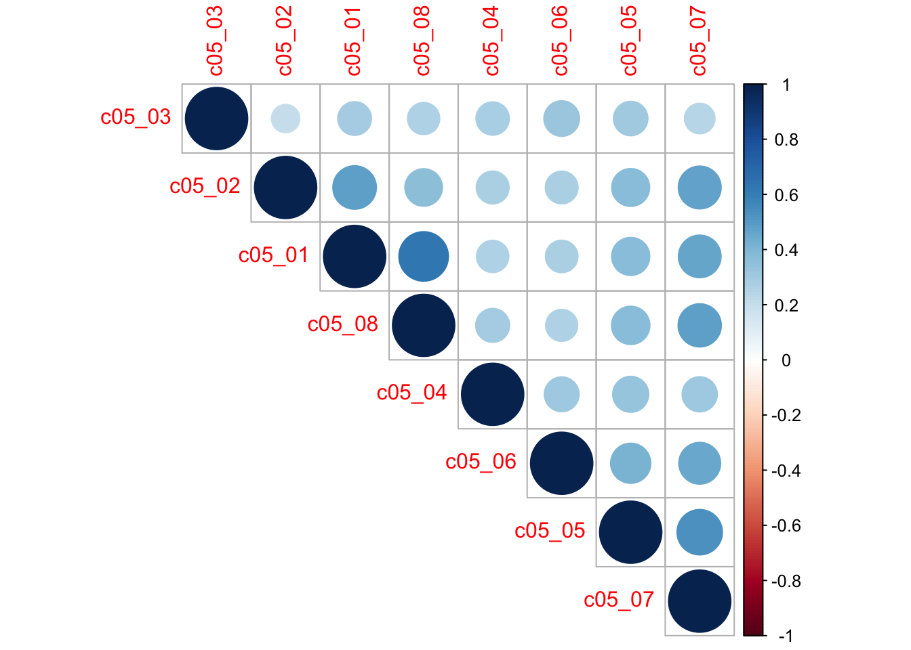
Aquí vemos que todos los ítemes considerados presentan correlaciones: positivas, pequeñas o medianas y estadísticamente significativas.
Estimación de Alfa de Cronbach.
tab_itemscale(conf)| Row | Missings | Mean | SD | Skew | Item Difficulty | Item Discrimination | α if deleted | |
| c05_01 | 0.41 % | 1.87 | 0.98 | 0.93 | 0.37 | 0.60 | 0.77 | |
| c05_02 | 0.72 % | 1.39 | 0.68 | 1.75 | 0.28 | 0.52 | 0.79 | |
| c05_03 | 0.14 % | 3.08 | 1.16 | -0.29 | 0.62 | 0.41 | 0.80 | |
| c05_04 | 6.01 % | 2.22 | 1.15 | 0.42 | 0.44 | 0.44 | 0.80 | |
| c05_05 | 0.85 % | 1.91 | 1.03 | 0.83 | 0.38 | 0.58 | 0.78 | |
| c05_06 | 1.81 % | 2.09 | 1.03 | 0.5 | 0.42 | 0.49 | 0.79 | |
| c05_07 | 1.61 % | 1.66 | 0.89 | 1.2 | 0.33 | 0.64 | 0.77 | |
| c05_08 | 0.61 % | 2.09 | 1.14 | 0.69 | 0.42 | 0.57 | 0.78 | |
| Mean inter-item-correlation=0.356 · Cronbach's α=0.806 | ||||||||
¿Qué te muestra esta tabla?
Puedes ver qué ítemes incluiste a través de Row
Puedes ver con qué frecuencia falta casos a través de Missing
Puede ver estadísticas descriptivas de los ítemes mediante Mean, SD y Skew
Puede ver cuán útiles son los ítemes para medir el concepto latente de Confianza en Instituciones a través de la dificultad del ítem, la discriminación del íteme y alpha de Cronbach si se elimina el ítem.
Aquí, nos centraremos en la discriminación y los valores del alpha de Cronbach:
Compruebe si los valores de Discriminación están por encima de .2. Esto indica el grado en que un ítem nos ayuda a discriminar entre participantes que obtuvieron puntuaciones muy bajas o altas en confianza.
Comprobar si el alpha de Cronbach es superior a 0,7. Cuanto más alto, mejor. Si en el alpha de Cronbach los valores aumentan bruscamente tan pronto como uno de los elementos no se considera para el análisis (es decir, “eliminado” según la tabla), esto indica que podemos considerar no usarlo para índice.
Aquí, parece que todos los ítems discriminan bien (todos los valores de Discriminación de Ítems son suficientemente altos) y que, juntos, forman un índice con validez satisfactoria, ya que alpha de Cronbach para los ocho ítems es de un 0.806.
Si hubiera algún indicador que muestra un alpha si el item es eliminado mejor que el observado, entonces sugiere que ese ítem podría ser eliminado. Por ejemplo, si algún ítem presenta un alpha si el item es eliminado de 0.85, entonces se sugeriría eliminar ese ítem. Por lo tanto, la escala quedaría compuesta por 7 ítemes en vez de ocho.
Conclusión acerca de la escala de Confianza.
Podemos utilizar los cinco elementos de Confianza para crear un índice medio llamado Confianza_institucional(conf_inst). Creamos este índice como el promedio de las 8 variables consideradas en el alfa de Cronbach. La justificación de hacer esto es que el alfa de Cronbach es bueno.
base <- base %>%
dplyr::mutate(conf_inst= (c05_01 + c05_02 + c05_03 + c05_04 + c05_05 + c05_06 + c05_07 + c05_08)/8)
## Revisar la variable agregada
#print(summarytools::dfSummary(base, method = "render")) ## Descripción de la base de datos
names(base) [1] "idencuesta" "c01" "c02" "c03" "c04"
[6] "c05_01" "c05_02" "c05_03" "c05_04" "c05_05"
[11] "c05_06" "c05_07" "c05_08" "c06_01" "c06_02"
[16] "c06_03" "c06_04" "c06_05" "c06_06" "c11"
[21] "c13" "c14_01" "c14_02" "d05_02" "d05_04"
[26] "m0_sexo" "m0_edad" "m01" "m35" "conf_inst" hist(base$conf_inst)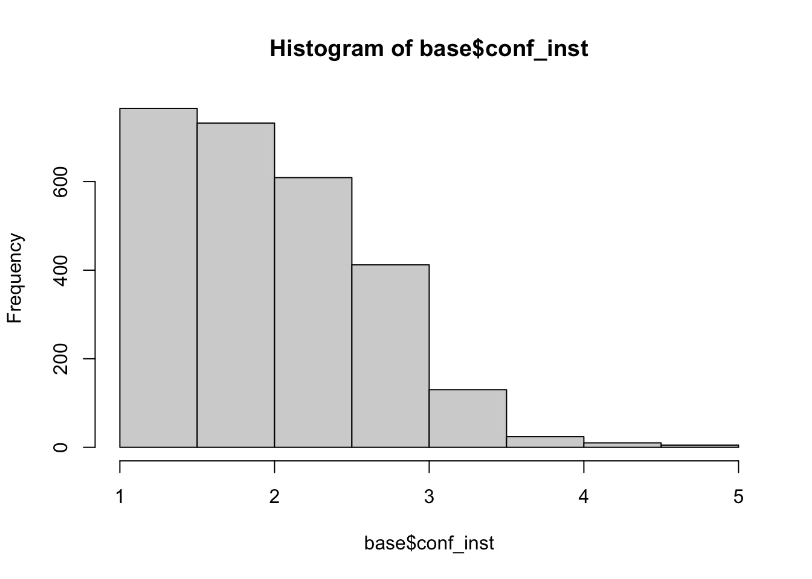
skim(base$conf_inst)| Name | base$conf_inst |
| Number of rows | 2927 |
| Number of columns | 1 |
| _______________________ | |
| Column type frequency: | |
| numeric | 1 |
| ________________________ | |
| Group variables | None |
Variable type: numeric
| skim_variable | n_missing | complete_rate | mean | sd | p0 | p25 | p50 | p75 | p100 | hist |
|---|---|---|---|---|---|---|---|---|---|---|
| data | 240 | 0.92 | 2.02 | 0.66 | 1 | 1.5 | 2 | 2.5 | 5 | ▇▇▃▁▁ |